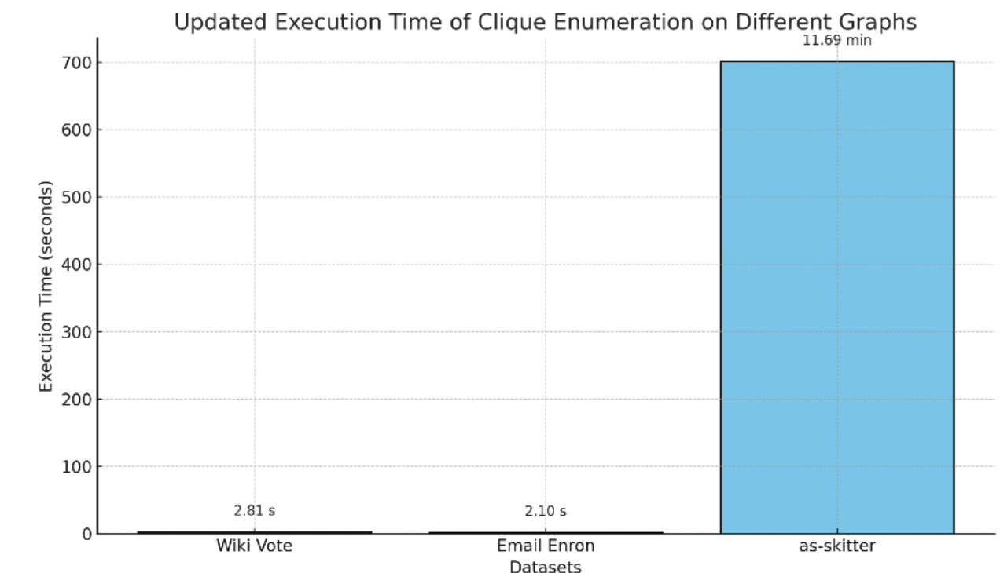

How the Algorithm Works
The algorithm uses a *degeneracy ordering* to process vertices efficiently, reducing redundant computations. It builds on a modified *Bron–Kerbosch* backtracking method, using degeneracy-based ordering in the outer recursion and pivoting in the inner recursion to minimize calls. At each recursion step, the algorithm splits candidates into potential members (P) and excluded members (X), expanding cliques only from P. This structured approach ensures all maximal cliques are found with optimal time complexity \(O(dn^{3d/3})\), making it highly effective for large, sparse graphs.
Results
Test Case Email-Enron
Number of Maximal Cliques Found: 226859
Number of Vertices: 36692
Number of Edges: 367662
Execution Time: 2.10081 seconds

Test Case As-Skitter
Number of Maximal Cliques Found: 37322355
Number of Vertices: 1696415
Number of Edges: 11095298
Execution Time: 701.12 seconds

Test Case Wiki-Vote
Number of Maximal Cliques Found: 459002
Number of Vertices: 7115
Number of Edges: 103689
Execution Time: 2.80654 seconds

Execution Time Comparison
